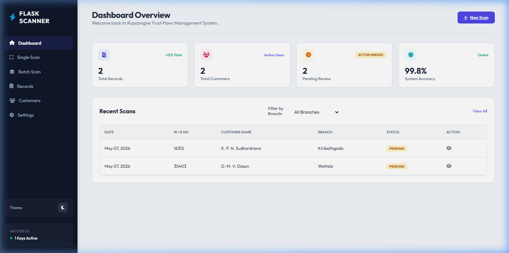
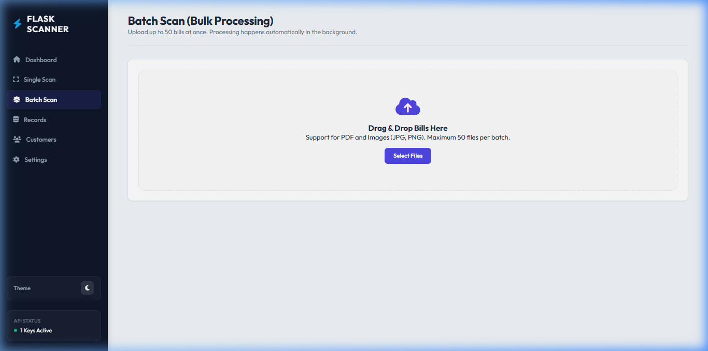
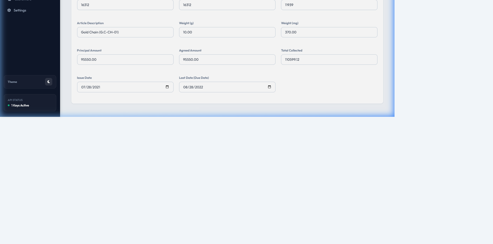
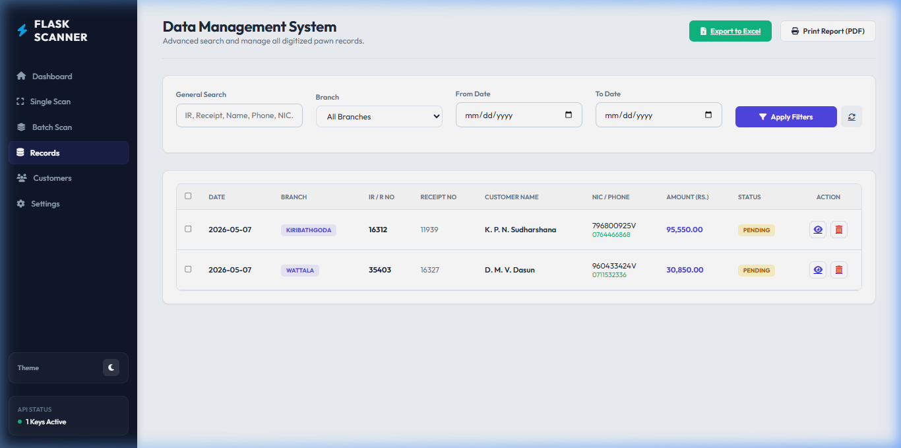
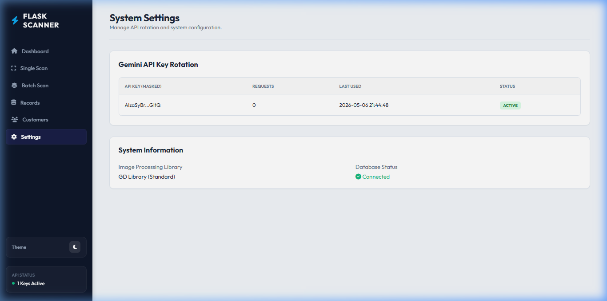

පරිශීලක අත්පොත (User Guide)
Flask Scanner Pro වෙත සාදරයෙන් පිළිගනිමු. මෙම පද්ධතිය නිර්මාණය කර ඇත්තේ රූපසිංහ ට්රස්ට් ඉන්වෙස්ට්මන්ට් ලිමිටඩ් සඳහා AI තාක්ෂණය (OCR) භාවිතා කර උකස් බිල්පත් ඉතා වේගයෙන් සහ නිවැරදිව ඩිජිටල්කරණය කිරීම සඳහා වේ. මෙහිදී A4 පිටුවක ඇති බිල්පත් දෙකක් හඳුනාගෙන ඒවායේ දත්ත වෙන් වෙන්ව ලබාගෙන පද්ධතියට ඇතුළත් කෙරේ.

Batch Scan මොඩියුලය මගින් ඔබට බිල්පත් දෙකක් සහිත A4 පිටු එකවර පද්ධතියට ඇතුළත් කළ හැක. පද්ධතිය මගින් ස්වයංක්රීයව එම රූපය කොටස් දෙකකට වෙන් කර, බිල්පත් වර්ගය හඳුනාගෙන IR අංකය, රිසිට්පත් අංකය, පාරිභෝගික නම සහ NIC වැනි තොරතුරු ලබා ගනී.

ස්කෑන් කළ පසු, දත්ත තහවුරු කිරීමේ පෝලිමට (Verification Queue) ඇතුළත් වේ. මෙහිදී පද්ධතිය විසින් IR/R අංකය භාවිතා කර බිල්පත් දෙක එකිනෙකට සම්බන්ධ කරයි. ඔබට රූප දෙකම පසෙකින් බලා දත්තවල නිවැරදිභාවය තහවුරු කිරීමට සහ අවශ්ය නම් නිවැරදි කිරීමට හැකියාව ඇත.

Records පිටුව මගින් ඩිජිටල්කරණය කළ සියලුම බිල්පත් නැරඹිය හැක. ශාඛාව, IR අංකය, රිසිට්පත් අංකය හෝ නම අනුව සෙවීම් කළ හැක. සෑම වාර්තාවක් සමඟම Cloudinary හි ගබඩා කර ඇති මුල් බිල්පතේ රූපයද නැරඹිය හැකිය.

Settings පැනලය හරහා Gemini API keys කළමනාකරණය කිරීම, ශාඛා ලැයිස්තුව යාවත්කාලීන කිරීම සහ අනෙකුත් තාක්ෂණික සැකසුම් සිදු කළ හැක. ස්කෑන් කිරීමේ ක්රියාවලිය සාර්ථක වීමට නම් අවම වශයෙන් එක් සක්රීය API key එකක්වත් තිබිය යුතුය.
